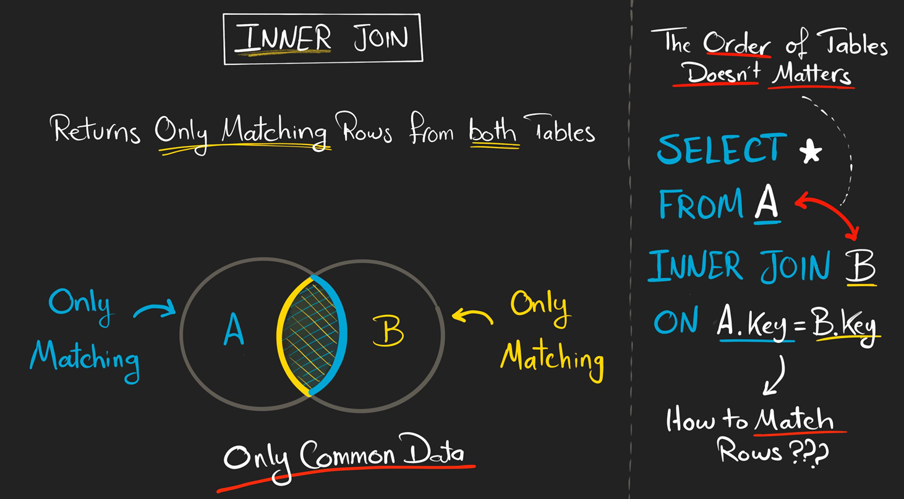
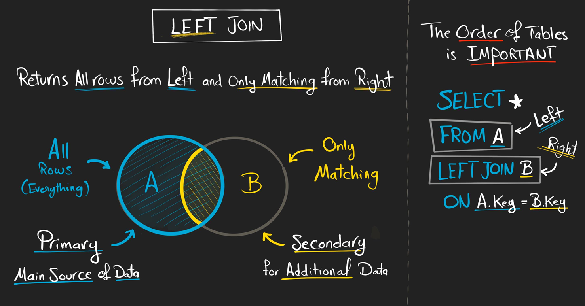
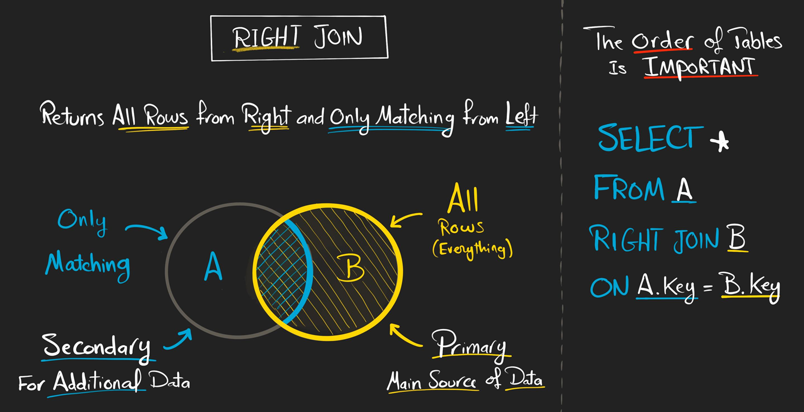
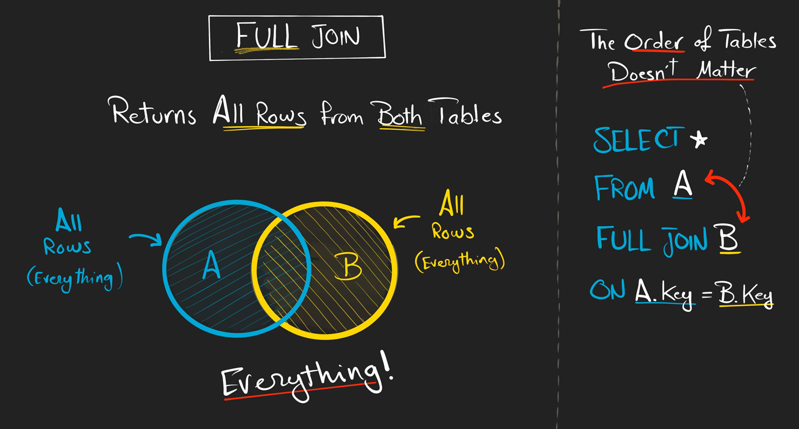
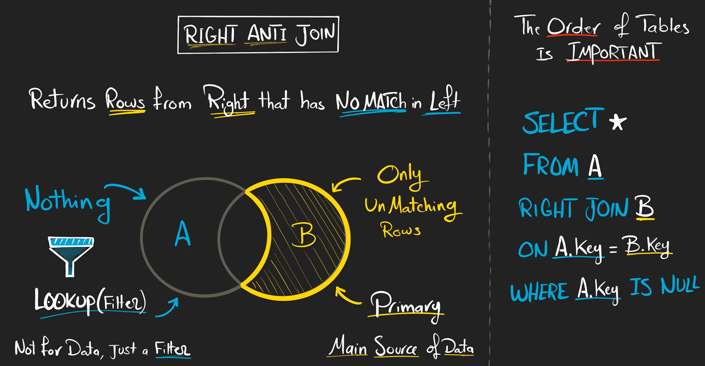
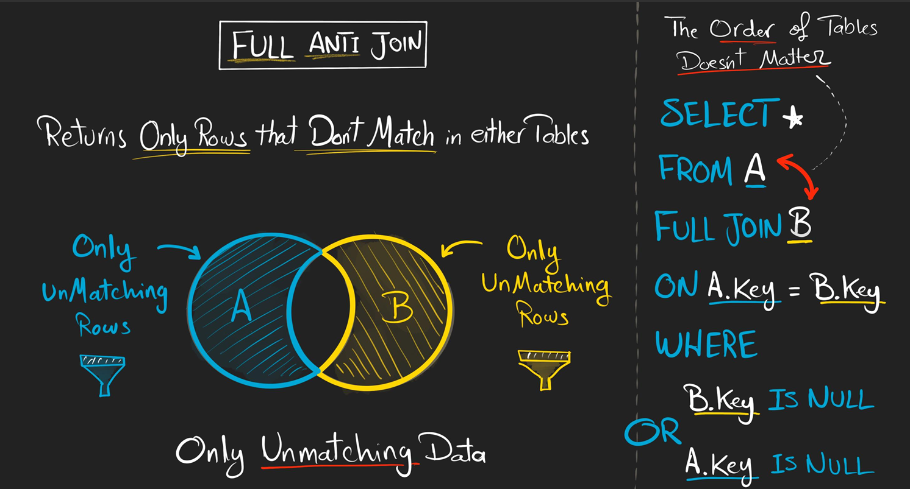
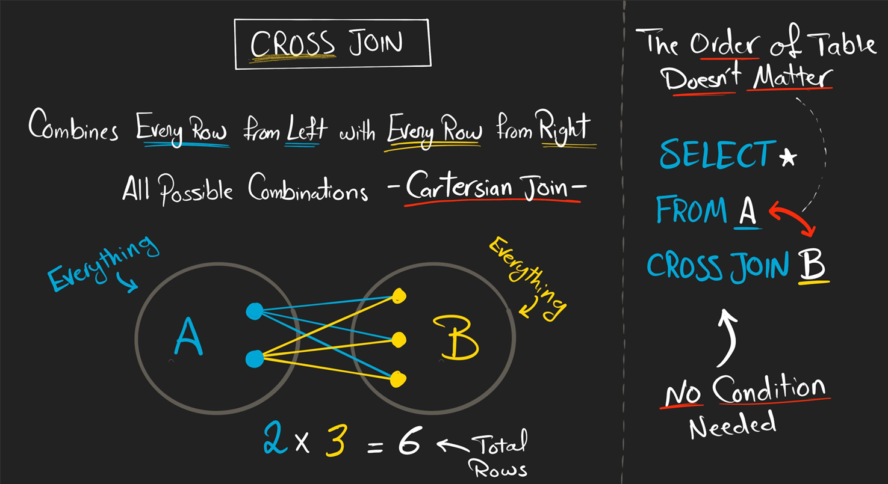

SQL Joins#
As we know SQL Joins are nothing but combining two or more tables column by column. In SQL joins, two tables have common column which is called as key column. When performing join on two tables, SQL first find the matching row in both tables based on key column and merge those two rows into one row by appending all the columns side by side. This is how a join actually occurs.
SQL Joins are used in multiple usecases. It is used in
recombining all the data. Sometimes analysts wants all data in one master table which can be easy to perform analysis and create dynamic dashboards. It is used toenrich the datawe already have. Sometimes we actually want to add some columns to original table such as adding zip code information of country of the customers. In those cases we can just join those reference table with the original table. It is also used tocheck the existence of particular data. Suppose if you want to all the customers who didn’t even placed an order yet. In this case you just perform some type of join on customers and orders table then the result will show the customers who are not placed any order yet.To understand the joins clearly, assume the tables as circles. When you perform the joins three scenarios would arise. Those are
Matching Data : It is common data existed in two tables.
All Data : It would be all the data from two tables or all the data from any one table.
Un Matching Data : It is data exists in one table but not in anothor table.
Based on these three scenarios different types of Joins araised. Those are NO JOIN, LEFT JOIN, RIGHT JOIN, FULL JOIN, INNER JOIN, LEFT ANTI JOIN, RIGHT ANTI JOIN, FULL ANTI JOIN, CROSS JOIN.
NO JOIN#
In SQL, NO JOIN is returning the data from two tables without combining them. The basic syntax of NO JOIN is simply two select statements of both tables returning all the columns

No JoinSyntax :
SELECT * FROM table1; SELECT * FROM table2;
Ex : Return all the data of customers and orders without combining them
SELECT * FROM Customers; SELECT * FROM Orders;
INNER JOIN#
INNER JOIN actually returns all the matching rows from both the tables based on a common key column. It simply returns common data present in both the tables. INNER Join actually starts with key column value on left table and start finding match for the same key column value in right table. If any match found in right table then it will include in the output otherwise not. Like this it would search for entire table.
In INNER JOIN order of table doesn’t matter. If you place left with right table and right with left table the output remains same.

Inner JoinSyntax :
SELECT * FROM table1 as A INNER JOIN table2 as B ON A.key = B.key
Ex : Retrieve the customer id, customer name, order id and sales made by the customers.
Here it is asked to retrieve the names and sales of the customers who placed an order.
SELECT c.id, c.first_name, o.order_id, o.sales FROM Customers as c INNER JOIN Orders as o ON c.id = o.customer_id
INNER JOIN is actually used to get the combined data which is common in both tables or else it can be used to check the existence of the data. As in above example we have got the customer who placed at least one order.
LEFT JOIN#
LEFT JOIN returns all the rows from the left table and matching rows from the right table. That means for LEFT JOIN, left table should be primary table and keep all the rows of it and right table is secondary table which is used as reference table to add extra information to left table by keeping only matching rows with the right table.
IN LEFT JOIN order of the table matters a lot. If you switch the order, the output would change.

Left JoinThe basic Syntax of LEFT JOIN is :
SELECT * FROM table1 as A LEFT JOIN table2 as B ON A.key = B.key
Ex : Retrieve the data of all customers and their orders including those without any orders
SELECT c.id, c.first_name, o.order_id, o.sales FROM Customers as c LEFT JOIN Orders as o ON c.id = o.customer_id
In the above example, sql first make an empty table with 4 columns of id, first_name, order_id, and sales. Now it first keeps the id and first_name of first customer in customers table. Now it searches for matching id in the right table. If any customer_id present in order table matches with id in customers table then sql will keep respective order id and sales in the output. Oterwise it will keep them as NULL. This is how LEFT JOIN works.
LEFT JOIN is mainly used to get combined data and it used for data enrichment also.
RIGHT JOIN#
RIGHT JOIN is strictly opposite to the LEFT JOIN. It returns all the rows from the right table and the matching rows from the left table. That means for RIGHT JOIN, right table is the primary source of data and keeps all the rows from it and left table is the secondary table which is additional or reference table and keeps only the matching rows.
In RIGHT JOIN also order of tables really matters. If you change the order, the output would change.

Right JoinThe basic syntax of RIGHT JOIN is :
SELECT * FROM table1 as A RIGHT JOIN table2 as B ON A.key = B.key
Ex : Retireve all the customers along with thier order including orders without any customers.
SELECT c.id, c.first_name, o.order_id, o.sales FROM Customers as c RIGHT JOIN Orders as o on c.id = o.customer_id
As we know RIGHT JOIN is strictly opposite to LEFT JOIN, so we can just switch the order of table s and perform LEFT JOIN itself instead of using RIGHT JOIN.
FULL JOIN#
FULL JOIN generally keeps all the rows from both tables. I mean it keeps all the rows from left table and right table and matching rows also.
In FULL JOIN, the order of tables doesn’t matter. As we are getting all rows from both tables then order of tables doesn’t matter here.

Full JoinThe syntax is :
SELECT * FROM table1 as A FULL JOIN table2 as B ON A.key = B.key
Ex : Retrieve all the customers and orders eventhough there is no match.
SELECT c.id, c.first_name, o.order_id, o.sales FROM Customers as c FULL JOIN Orders as o ON c.id = o.customer_id
FULL JOIN is used to make a master table with all data from both the tables. It is also used to check existence but with one additional condition which we see in below joins.
LEFT ANTI JOIN#
LEFT ANTI JOIN is LEFT JOIN with WHERE Filter. It actually returns the rows from the left table that has no match in right table which means we are getting unmatched data from left table.
We doesn’t doesn’t have any special keyword for left anti join. We use LEFT JOIN with WHERE Clause to get the result of LEFT ANTI JOIN.

Left Anti JoinThe basic syntax is :
SELECT * FROM table1 as A LEFT JOIN table2 as B ON A.key = B.key WHERE B.key IS NULL
Ex : Return the customers who are not placed any order.
SELECT * FROM Customers as c LEFT JOIN orders as o ON c.id = o.customer_id WHERE o.customer_id IS NULL
RIGHT ANTI JOIN#
In SQL, RIGHT ANTI JOIN returns the rows from right table that have no matching in left table which we are getting unmatched rows of right table. This is simple opposite to LEFT ANTI JOIN. So we can get this result by just changing the positions of table in LEFT ANTI JOIN or we can use RIGHT JOIN with WHERE clause.

Right Anti JoinThe basic syntax of RIGHT ANTI JOIN is :
SELECT * FROM table1 as A RIGHT JOIN table2 as B ON A.key = B.key WHERE A.key IS NULL
Ex : Retrieve the orders which has no matching customers.
SELECT * FROM Customers as c RIGHT JOIN Orders as o ON c.id = o.customer_id WHERE c.id IS NULL
FULL ANTI JOIN#
FULL ANTI JOIN in SQL is used to returns all the unmatching rows from both tables which means it returns rows that doesn’t match either in both tables.
We doesn’t have any FULL ANTI JOIN clause in SQL. So we use FULL JOIN + WHERE Clause.

Full Anti JoinThe Syntax of FULL ANTI JOIN is :
SELECT * FROM table1 as A FULL JOIN table2 as B ON A.key = B.key WHERE A.key IS NULL OR B.key IS NULL
Ex : Find customers without any orders and orders without any customers.
SELECT * FROM Customers as c FULL JOIN Orders as o ON c.id = o.customer_id WHERE c.id IS NULL or o.customer_id IS NULL
LEFT ANTI JOIN, RIGHT ANTI JOIN, FULL ANTI JOIN are generally used to check the existence of any data.
CROSS JOIN#
CROSS JOIN combines every row from left table with every row from right table whcih means it is used to return all combinations of rows of left rtable with right table.
We might think there would be no use with CROSS JOIN. But we use it in some senarios as if you want to check all color combinations of your products then you CROSS JOIn products table with color table to get desired result.

Cross JoinThe Syntax of CROSS JOIN is :
SELECT * FROM table1 CROSS JOIN table2
Ex : Find all combinations of customers with thier orders.
SELECT * FROM Customers CROSS JOIN Orders
Note : If you want to retrieve the matching rows then you use INNER JOIN. If you want to retrieve all the rows then two cases would arises. If you want to retireve all rows from one table then we use LEFT JOIN. If you want to retrieve all rows from both tables then we use FULL JOIN. In case of un matching rows also we have two cases. If you want to retireve un-matching rows from one table then we use LEFT ANTI JOIN. If you want to retrieve un matching rows from both tables then we use FULL ANTI JOIN. Using RIGHT JOIN or RIGHT ANTI JOIN is unnecessary as we can get the result of RIGHT JOIN by using LEFT JOIN also. So when you encounter a joins question, then convert that question into these 3 scenarios i.e Matching, All Rows, Un-Matching Rows. Once you have converted questions into these scenarios then we can simply write that join query. But mostly we can just use LEFT JOIN and FULL JOIN as we can implement INNER JOIN with LEFT JOIN + WHERE Clause. So most of the time we encounter LEFT JOIN only. IN Multi table joins also we encounter LEFT JOIN only.